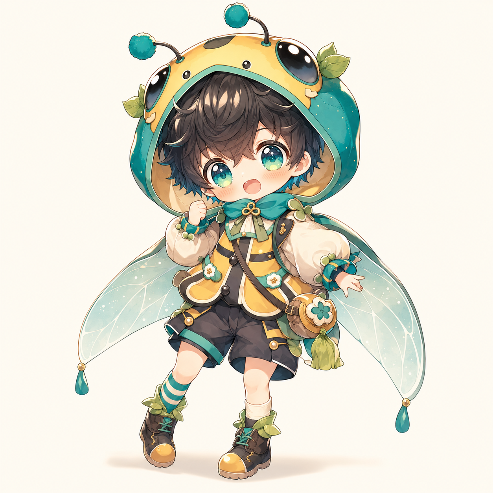

蓮飛 / 犬の男の子
将棋風シミュレーションRPG
推しと仲良くなって、盤上でだいたい全部ひっくり返す。


Rule Book
攻撃でHPを減らし、0になると離脱。防御や感情で受けるダメージが変わる。
飛は直線、角は斜め、銀は周囲、歩は前進寄り。親密度や感情で移動が伸びる。
親密度は0から。会話、ごはん、ミニゲームでHP上限999まで育てられる。
空腹だとごはんイベントへ。会話せずターン終了すると嫉妬が上がりやすい。
建築Pで壁材を買う。壁はHP1、建物は使った壁材の数だけ耐久値が増える。
敵の王を撃破するか、右上の制圧マスに味方が到達すると勝利。
将棋風シミュレーションRPG
Result